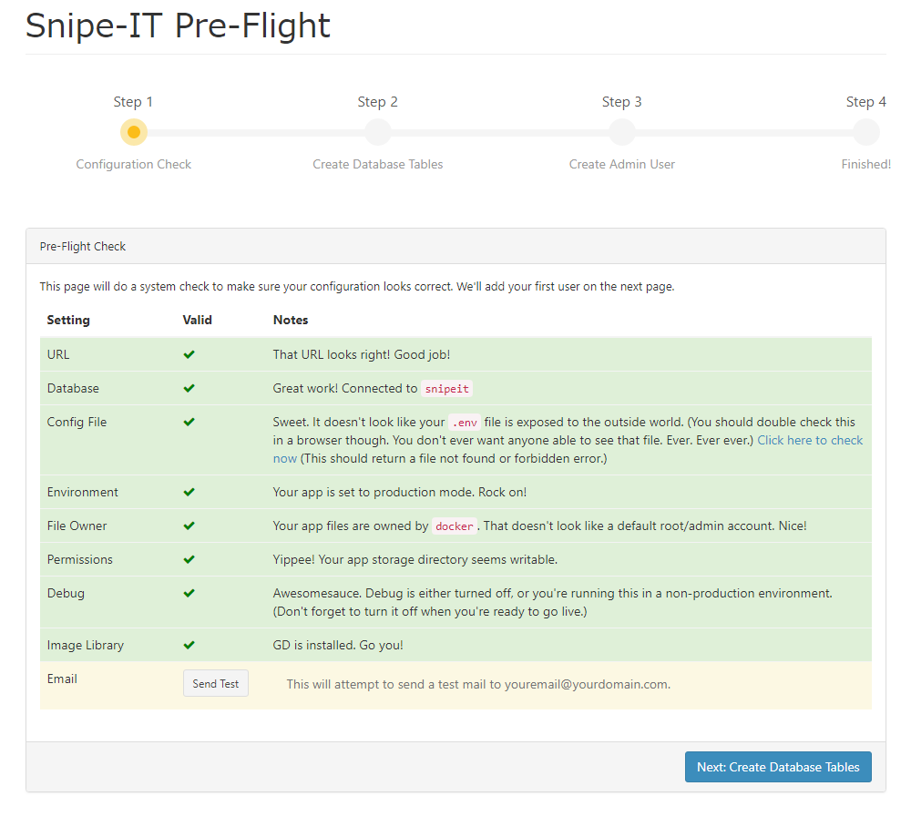
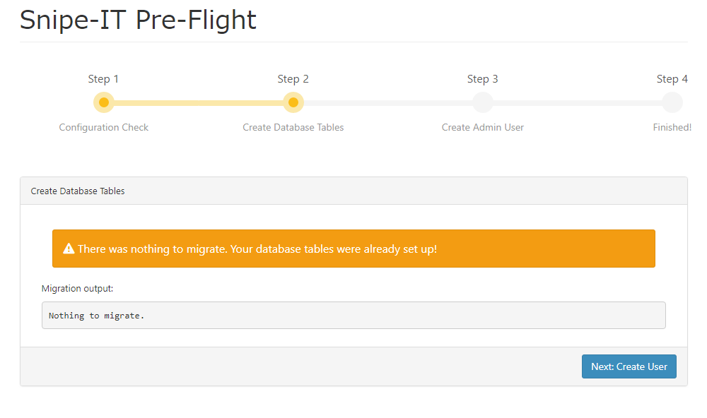
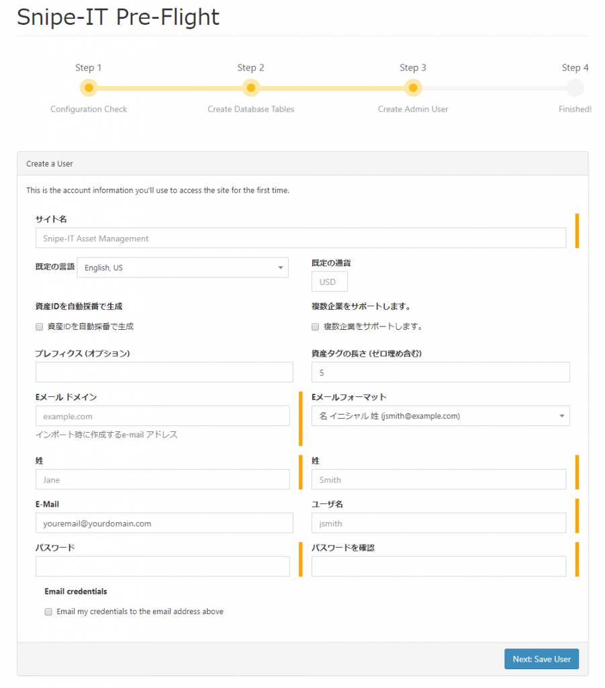
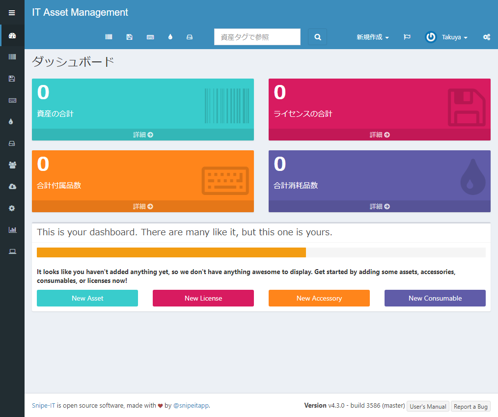

Introduction
IT会社にいると、大なり小なり資産の管理作業が発生します。
自分のグループだけでもかなりの資産がありますが、それをExcelで管理していて辛い状況です。
そんな中、資産管理のWebアプリでよさげなアプリが、OSSかつDockerで提供していたの導入してみました。
ちなみに、Windows 10でのDocker for Windows環境です。
Get started!!
インストール手順は下記に書いてありますが、ちょっと分かりにくいです。
1. 設定ファイルの用意
下記のようなテキストファイルを用意します。
1 | # Mysql Parameters |
このファイルのパスを、ここではD:\VirtualMachines\Docker\volume\snipe-it\env.txtとして保存します。任意の場所でよいです。
2. データベースコンテナの用意
次に、データの保存先であるデータベースのコンテナを用意します。
データベースのファイルはホスト側に保存しますので、ディレクトリをあらかじめ用意しておきます。
ここでは、D:\VirtualMachines\Docker\volume\snipe-it\mysqlがデータベースファイルの格納先とします。
下記がデータベース用のコンテナです。
1 | $ docker run --privileged --name snipe-mysql --env-file=D:/VirtualMachines/Docker/volume/snipe-it/env.txt -v D:/VirtualMachines/Docker/volume/snipe-it/mysql/:/var/lib/mysql -d -P mysql:5.6 |
3. APP_KEYの取得
先のテキストファイルに★後から設定★と書かれていた値を取得します。
1 | $ docker run --rm snipe/snipe-it:latest |
このbase64:xxxxxxxxxxxxxxxxxxxxxxxxxxxxxという部分を先のテキストファイルに貼り付けます。
つまり下記のようになります。
1 | APP_KEY=base64:kzzSXbSsFtAtbvhGYrp9M3H0WeJGHrw3385xy5PAXP4= |
4.Snipe-ITの起動
最後にSnipe-ITそのもののコンテナを作成します。
ここでも設定などをホスト側に作成するので、ディレクトリをあらかじめ用意しておきます。
ここでは、D:\VirtualMachines\Docker\volume\snipe-itとします。
下記がコンテナ作成のコマンドです。
ホスト側のポート番号9001は自由に変えてもらって結構です。
1 | $ docker run -d -p 9001:80 --privileged --name="snipe-it" --link snipe-mysql:mysql --env-file=D:/VirtualMachines/Docker/volume/snipe-it/env.txt -v D:/VirtualMachines/Docker/volume/snipe-it/:/var/lib/snipeit snipe/snipe-it:latest |
これでWebからアクセスできますが、このままだと動きません。
情報が見当たらなかったのですが、必要なフォルダとファイルが作られていないため、データベースを作る際にエラーになってしまうので、下記のコマンドで回避します。
1 | $ docker exec -it snipe-it /bin/bash |
5.セットアップ
 Next: Create Database Tables をクリック  Next: Create User をクリック  必要な情報を入力して、Next: Save User をクリック 
セットアップ終了!!
{kind=link}
{kind=link}
{kind=link}
{kind=link}